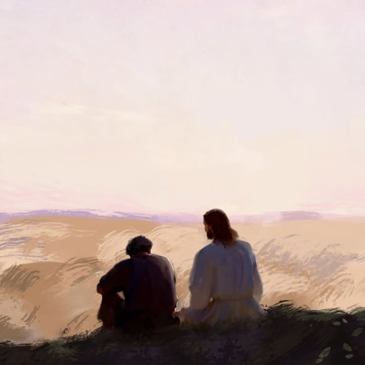
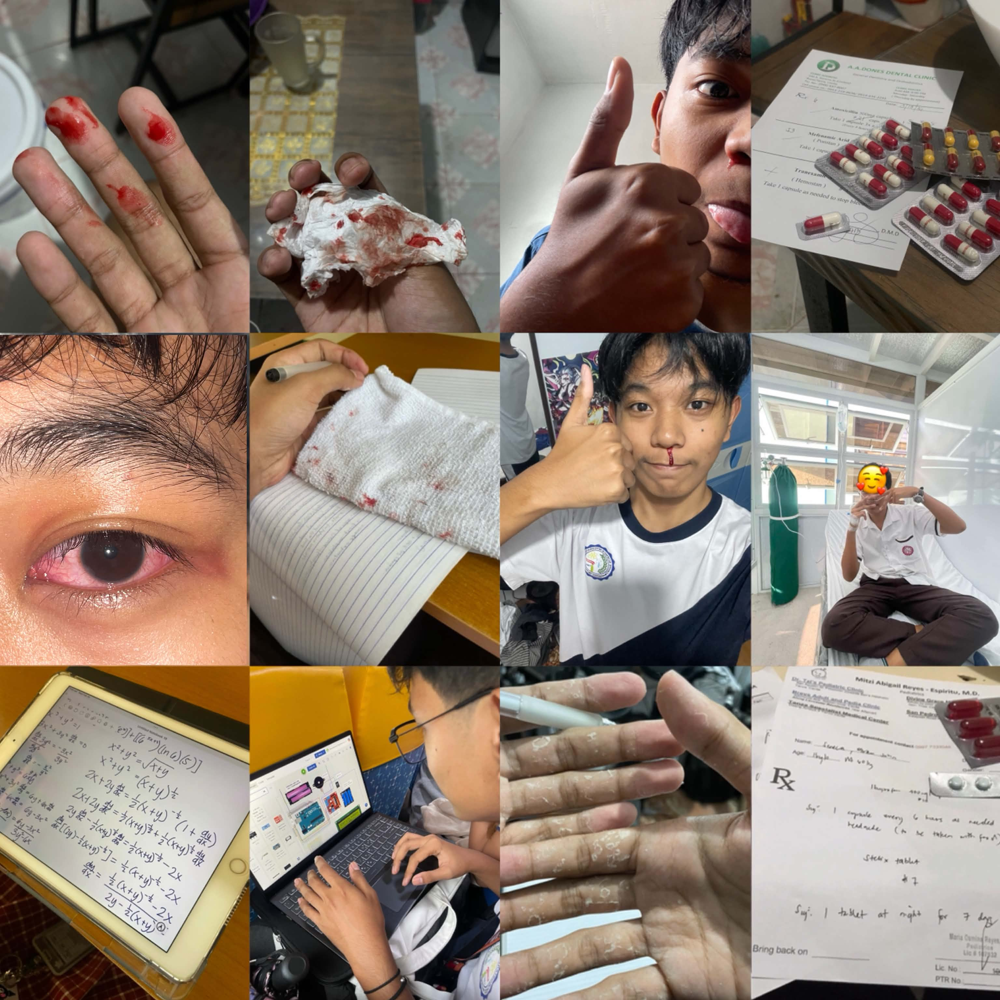
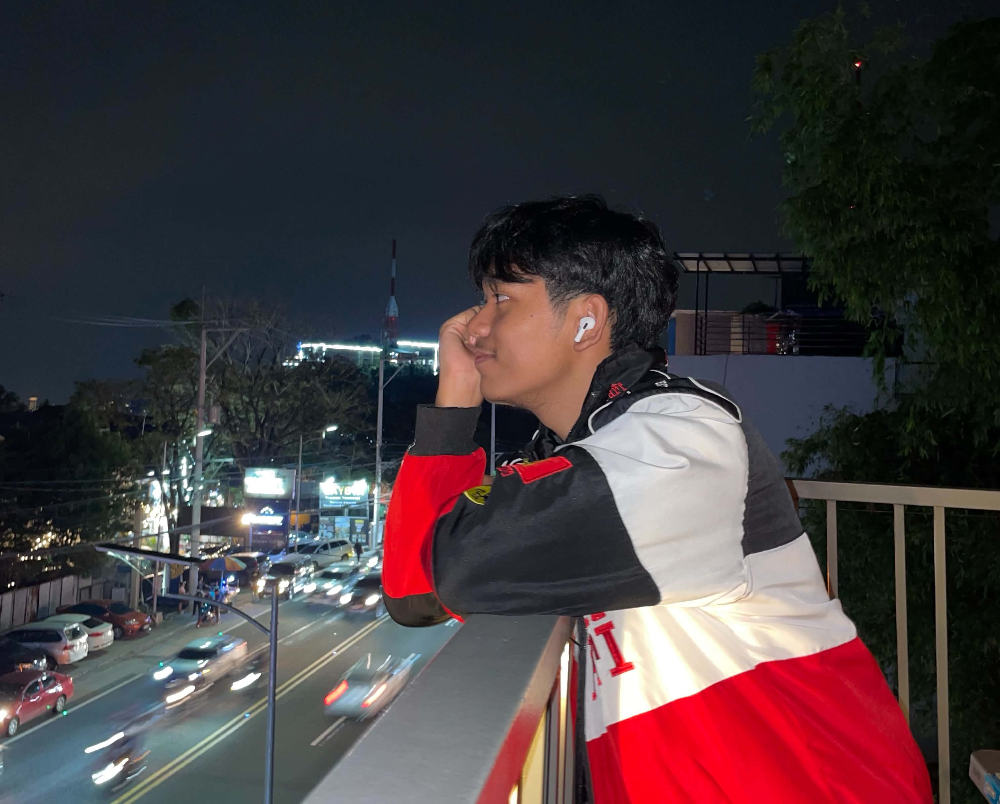
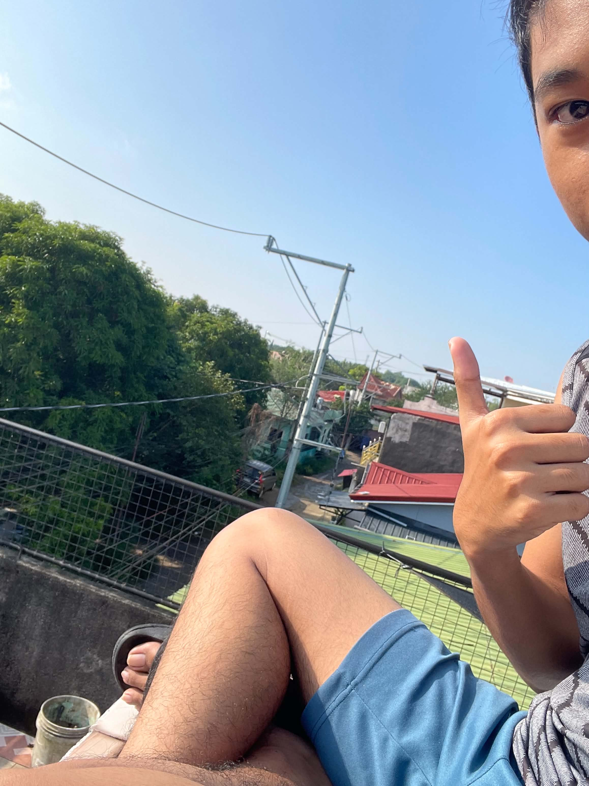
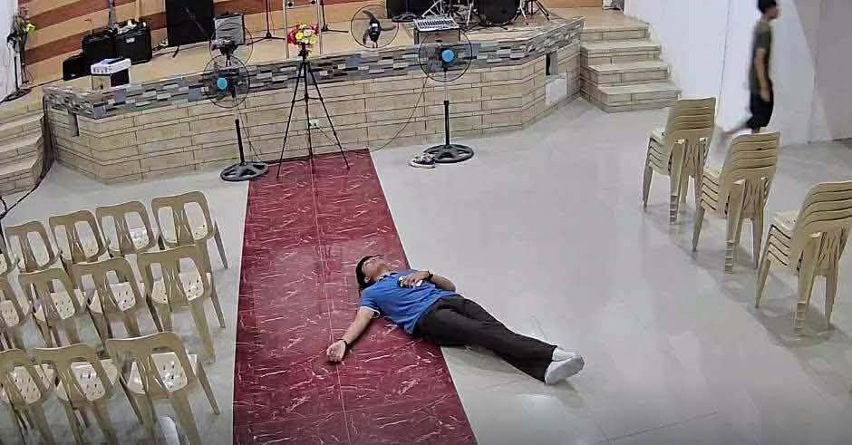

- The Good Apple
- The Good AppleThe First Name


Yahweh is the Hebrew name of the God of Israel, represented in the Hebrew Bible by the four consonants YHWH (the Tetragrammaton)
Yohanan (Hebrew: יוֹחָנָן, Yôḥānān) is a Hebrew given name meaning "YHWH is gracious" or "God is gracious". It is the root name behind John, with a feminine form of Joanna.
The reason I put this in my website is that the first word that people see when they are curious or wants to get to know me, is the name that saved me.
Jesus Christ is a very special friend and a companion to me, in my life, and in all my days. He's the assurance and the warm comforting feeling when the sun kisses your face.
In all my days I want Him and only Him to be glorified. Thus my life verse: Matthew 6:33 (NIV) reads: "But seek first his kingdom and his righteousness, and all these things will be given to you as well."
Looking back at all the commitments I took on and the conflicts within my schedules, I used to think that burning myself out was okay because, after all, para kay Lord naman.
I blindly made decisions because I saw the blessings and opportunities they offered without considering the responsibilities and consequences that came with them. It felt almost unreal to receive so many opportunities from God. I thought everything was falling into place until reality struck.
The world of academics eventually swallowed me whole. Countless pages of lectures, written activities, and memorization consumed my time until my exhaustion reached the point where I had to see a doctor.

What made it worse was my fear of letting go of my academic aspirations. At first, I wanted to achieve high honors. When things became difficult, I settled for the idea of simply receiving honors. Eventually, everything became so overwhelming that I started fearing I might fail some of my subjects.
All of that, alongside ten church commitments and practically no weekends to accomplish the hundreds of activities waiting for me.
Hectic and overworked were understatements. I could easily admit that I was physically exhausted, but what hurt more was acknowledging that I was also struggling emotionally and mentally while dealing with personal battles I couldn't fully open up about yet. Alam na ni Lord 'yon.
Being part of the associate pastoral team also meant spending my Sundays at church from 9 AM until 7 PM. With barely any time left for academics, I spent months sacrificing sleep just to keep up with everything.
Throughout that season, I held onto Matthew 6:33:
“But seek first the kingdom of God and his righteousness, and all these things will be added to you.”
However, I eventually realized how greatly I had misunderstood this verse. Seeking God first does not guarantee a life free from difficulties. If faith alone exempted us from suffering, then even the disciples would not have experienced the hardships they endured.

Another principle I struggled with was that faith without works is dead. Sa totoo lang, wala na talaga akong oras para mag-review, so I resorted to praying. But I also knew that praying for wisdom did not eliminate my responsibility to study. Faith was never meant to replace effort, and trusting God was never an excuse to neglect the responsibilities entrusted to me.
So many principles, so many commitments, so many hardships—all competing for what little time I had.
And yet, perhaps it was at my lowest that I encountered the Lord most deeply.
Now that I find myself in a season of comfort, I vow to continue giving Him all the praise.
Whenever I have the opportunity, I spend at least two hours on our rooftop, meditating, praying, and listening to worship songs as I watch the sunset gradually turn into night.

I divide those moments into four phases, following the acronym PRAY.
Praise — When the sun is still visible, I praise Him for His goodness and faithfulness.
Repentance — When the moon becomes more prominent, I reflect upon my shortcomings and realizations.
Ask — When the stars begin to appear, I surrender my concerns, prayers, and desires before Him.
Yield — When the night fully settles, I simply appreciate its beauty, rest in His presence, and surrender to His will.
Through these moments, I vowed to become more consistent and intentional in growing as His servant—not to repay His faithfulness, but to respond to it.
Perhaps that is my greatest realization this year:
Gratitude should not be dependent on comfort, just as faith should not be dependent on hardship.
When we allow our circumstances to determine our gratitude and faith, our foundation becomes unstable. Comfort may cause us to forget God, while suffering may become the only reason we seek Him.
That foundation will inevitably collapse unless we make God Himself the very ground upon which we stand.
Doon ko na-realize na regardless of our circumstances, praising Him should not merely be an obligation. It should be a desire.
Psalm 37:4 says:
“Delight yourself in the Lord, and he will give you the desires of your heart.”
But perhaps true fulfillment is not found in receiving everything our hearts desire. No achievement, opportunity, recognition, or earthly blessing will ever completely satisfy us.
Not unless the very desire of our hearts is God Himself.

I no longer want to seek Him simply because of what He can give me, nor do I want to draw near to Him only when life becomes unbearable. I want to seek Him because He is worthy of being sought, love Him because He is worthy of being loved, and praise Him because He is worthy of all praise—regardless of the season I find myself in.
It's genuinely fulfilling to have arrived at this realization, hahaha. What began as a small reflection eventually transformed my perspective on the life I once thought was stable.
God is not merely the One who fulfills my desires. He is the desire Himself.

All the glory belongs to Jesus Christ.